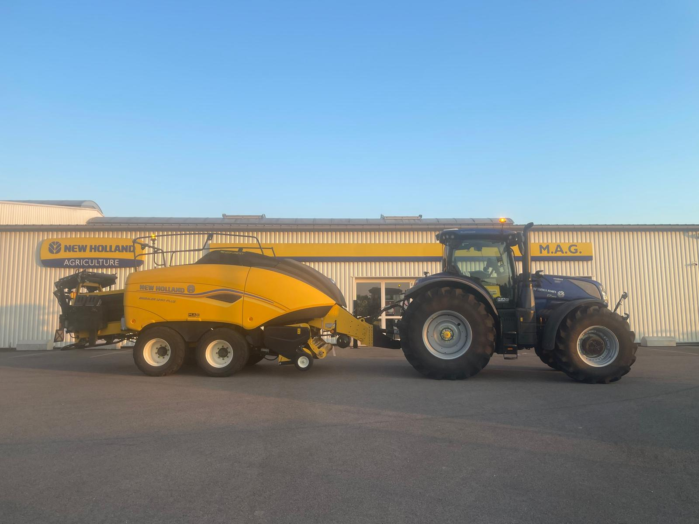

Work Experience
Materiel Agricole Gauthier (part of Group JCV Agri), Autun, Warehouse operator and Demonstrator (Jun–Aug 2026): In June, I reorganized the Autun site and served clients, freeing 10% of the warehouse space (200 of 2,000 sq ft). From July to August, I demonstrated the new T7.300 tractor and the BigBaler 1290 Plus directly on farms: I ran demos for 20 customers, which led to 4 contracts. Watch the video of a demonstration.
Renault Trucks, Bourg-en-Bresse, Blue collar Internship (Jun–Jul 2025): I completed my blue-collar internship in a Renault Trucks (Mack Trucks in the US) factory, where I assembled 2,340 fenders on the production line. Being on the production line cast a new light on my understanding of this industrial work. I analyzed my workstation and improved its ergonomics: I redesigned a pneumatic control on CATIA to reduce noise disturbance, which I 3D printed afterward, and I reorganized the workstation, reducing the takt time by 5.4 s per fender on average.
Group JCV Agri, Saône et Loire, Warehouse operator (summers 2021–2025): I worked there as a warehouse operator every summer from 2021 to 2025. In 2023, I received, followed up and sold spare parts to more than 150 clients over 2 consecutive months. In 2024, I designed and installed a new workshop at the Poligny site: 800 sq ft of self-service workshop and 500 sq ft of spare parts storage. In 2025 (from July to August), I reorganized the spare parts storage by category during the stocktaking at the Saint-Germain-du-Bois site, which freed the equivalent of 1,000 sq ft. Over these 5 summers, I learnt what the specific spare parts of agricultural machinery are used for, as well as sales techniques and warehouse operation and optimization.
Volunteering
Arts et Métiers Junior Enterprise, Lille, Volunteer Business Manager (Dec 2024–Jun 2026): Being part of the business team of the junior enterprise meant drafting business proposals through sales prospecting or directly for interested companies, securing projects and contracts, and then managing the 10+ members working on the missions. I generated €10k out of €38k annual revenue and delivered 5 successful missions to clients. I also organized business events for more than 60 people (€5k contract).
Les cordées de la réussite (Climb toward success), Paris, Volunteer:I help undergraduate students succeed in the graduate schools‘ competitive admission examinations. I help them acquire rigorousness in their work, give them advice on their methodology and help them understand complex engineering science systems.
A Bras Ouverts (With Open Arms), Paris, Volunteer: I accompany people with intellectual disabilities on weekend trips in the French countryside. We go as 3 to 5 duos (a duo is one person with a disability and one companion) and live for a weekend at the rhythm of the "young", as they are called. This amazing experience makes you think differently about what people with disabilities are able to do, and about your own life choices.